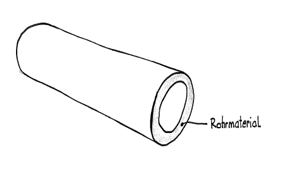

5 Volumen vom Rohrmaterial
Zuerst die Pflicht-Aufgaben (★★). Die Extra-Aufgaben (★★★) am Ende sind freiwillig.
Tippe in die Kästchen. Dann tippe auf „Prüfen“.
Grün = richtig, Rot = schau noch einmal.
Rohrmaterial = die Rohrwand selbst (Stahl, Kupfer oder Kunststoff). Das brauchst du später, um auszurechnen, wie schwer ein Rohr ist.

AS = Sägequerschnitt (der Ring, den du nach dem Absägen siehst)
VM = Volumen vom Rohrmaterial
AS = DA² · π : 4 − di² · π : 4
Kürzer geht es so: AS = (DA² − di²) · π : 4
VM = AS · L
Großer Kreis (außen) minus kleiner Kreis (innen) = Ring.
Beispiel

Gegeben: Rohr 40x4, L = 700 cm
DA = 40 mm = 4 cm, di = 32 mm = 3,2 cm
AS = 4² · π : 4 − 3,2² · π : 4
AS = 12,57 cm² − 8,04 cm² = 4,53 cm²
VM = 4,53 cm² · 700 cm = 3171 cm³ ≈ 3,17 dm³
Achtung Einheiten! Beim Rohr steht der Durchmesser in mm, die Länge oft in cm oder m.
Aufgabe 1 ★★
Rohr: DA = 33 mm, di = 28 mm, L = 3,4 m. Berechne AS und VM.
Rechne in cm: 33 mm = 3,3 cm, 28 mm = 2,8 cm, 3,4 m = 340 cm.
Tippe mit Klammer: ( 3,3² − 2,8² ) · π : 4
| AS = | cm² |
| VM = | cm³ |
Aufgabe 2 ★★
Rohr: DA = 1,7 dm, di = 1,5 dm, L = 3420 mm. Berechne AS und VM.
Rechne alles in dm: 3420 mm = 34,2 dm. Dann AS in cm² umrechnen (1 dm² = 100 cm²). Für VM nimm AS in dm², nicht in cm².
| AS = | cm² |
| VM = | dm³ |
Extra: Wenn du noch Zeit hast ★★★
Pflicht geschafft! Du darfst hier aufhören.
Diese Aufgaben sind freiwillig. Hier musst du umformen.
Aufgabe 3 ★★★
Hier ist AS schon gegeben. Berechne, was fehlt.
Rohr 1: 34 cm² = 0,34 dm². Rohr 2: umgeformt AS = VM : L. Rohr 3: 3,4 cm = 34 mm, 1 cm³ = 1000 mm³.
| Rohr 1 | |
|---|---|
| AS | 34 cm² |
| L | 350 dm |
| VM | dm³ |
| Rohr 2 | |
|---|---|
| AS | cm² |
| L | 17 cm |
| VM | 68 cm³ |
| Rohr 3 | |
|---|---|
| AS | 125 mm² |
| L | 3,4 cm |
| VM | cm³ |